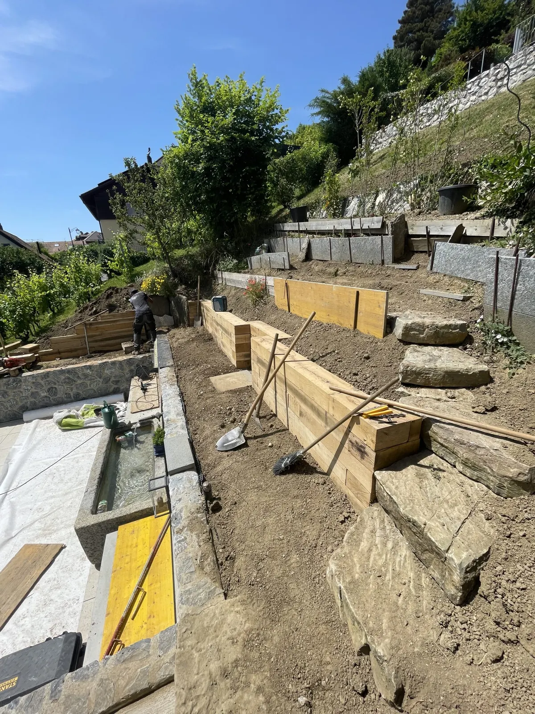
Aménagement paysager
Des aménagements extérieurs qui allient esthétique, solidité et confort d'utilisation.
- Cours et cheminements d'accès
- Murs et enrochements
- Création et rénovation de terrasses
- Plantations variées
Paysagiste familial · Riviera vaudoise
Depuis 2003, Mouron Paysagistes crée et entretient des jardins privés et communaux à travers la Riviera vaudoise, depuis le Mont-Pèlerin.
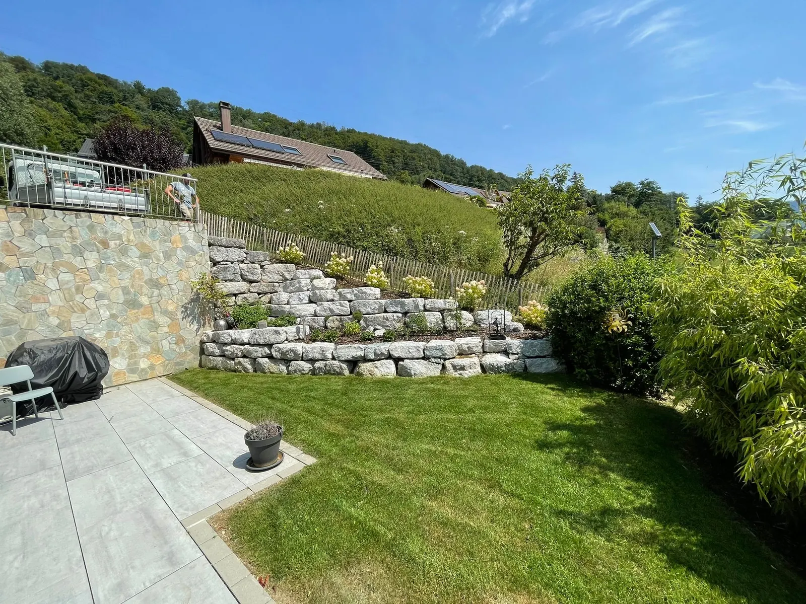
Ce qui nous guide
Plus de vingt ans de savoir-faire, transmis avec passion et exigence, et une parfaite maîtrise du territoire.
Des méthodes durables et des plantes adaptées à notre région, qui respectent l'équilibre naturel du terrain.
Selon l'ampleur du projet, un architecte paysagiste peut être associé pour une vision créative et technique.
Carnet de chantier · Mont-Pèlerin
60 m² de grès cérame posés sur une dalle en béton caverneux. Un travail de précision et de patience, raconté en quatre étapes.
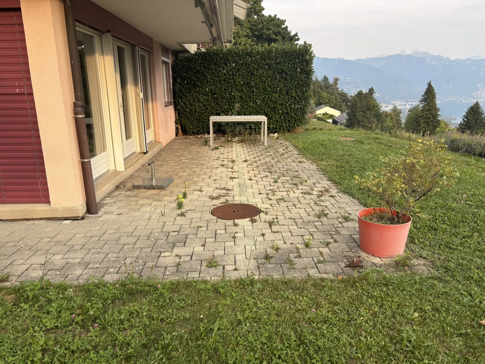
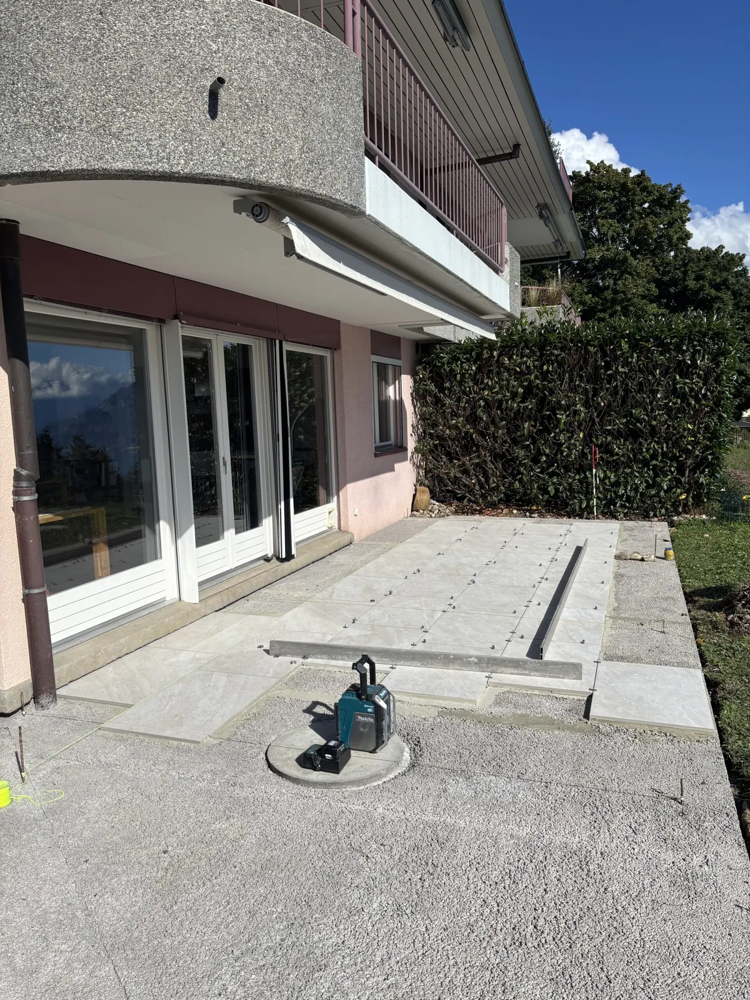
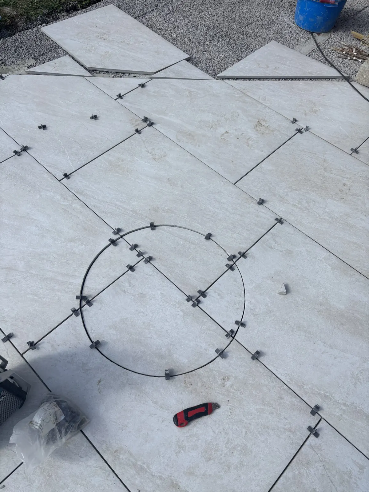
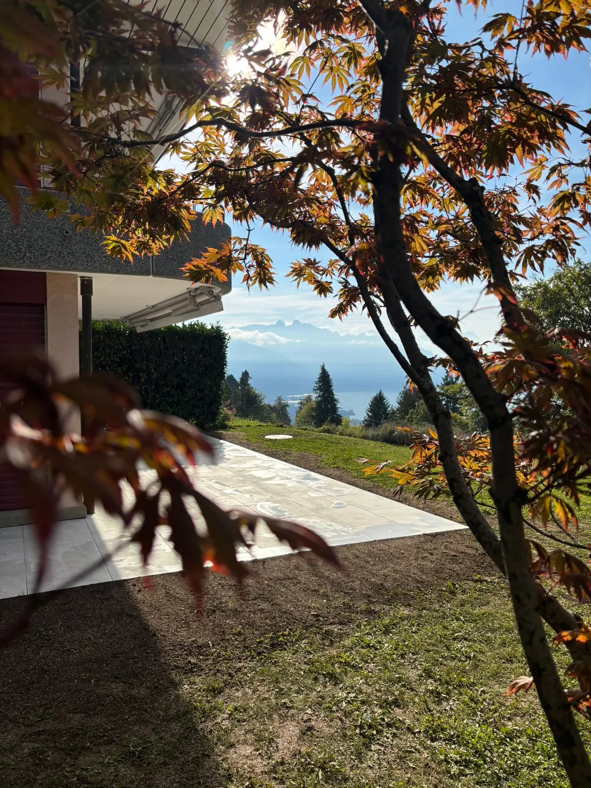
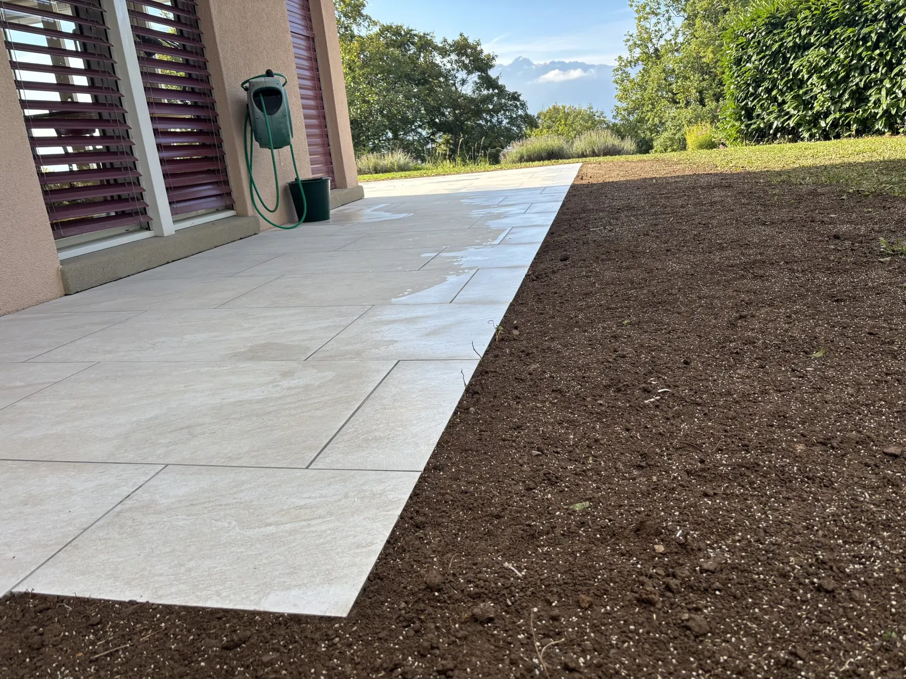
Services

Des aménagements extérieurs qui allient esthétique, solidité et confort d'utilisation.
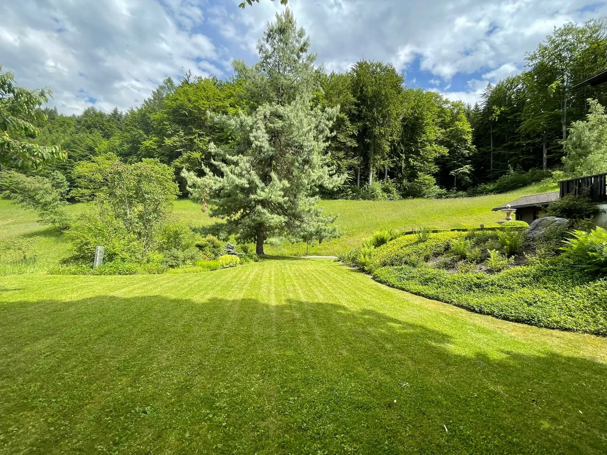
Un suivi régulier ou ponctuel pour préserver la vitalité de vos végétaux, toute l'année.
Au bon moment de l'année
Une taille bien réalisée fait toute la différence : des arbres plus vigoureux, une meilleure circulation de la lumière et, surtout, une récolte plus abondante.
Réalisations récentes
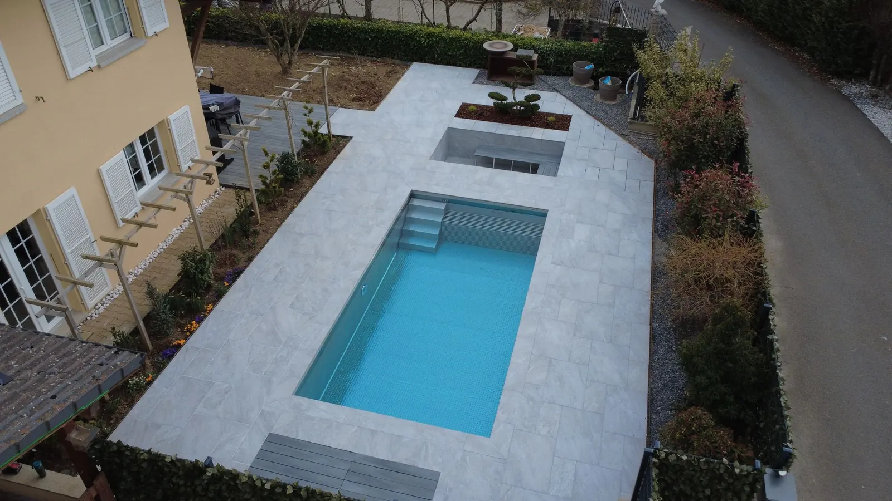
Terrassement sur 180 cm de profondeur, dalle de fondation de 25 cm, bassin posé au camion-grue puis remblayé avec 45 tonnes de gravier rond du lac Léman. En collaboration avec Aquapure Piscines & Spas.
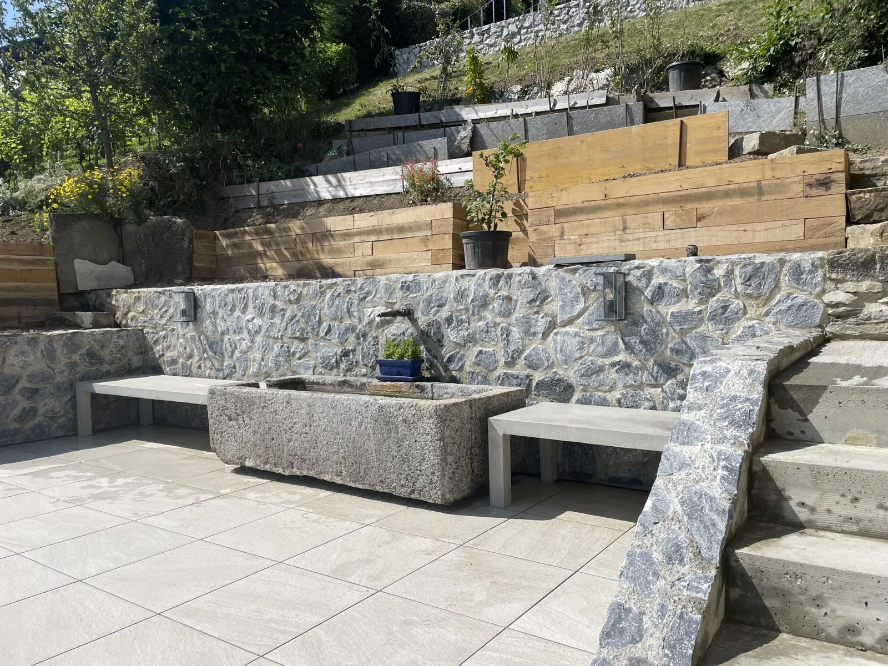
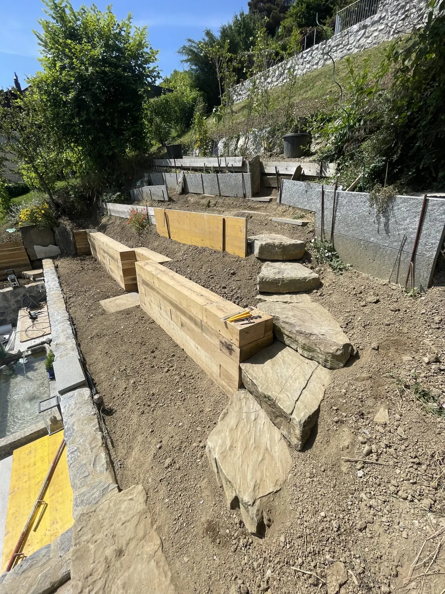
Stabilisation d'un talus et création de retenues en chêne.
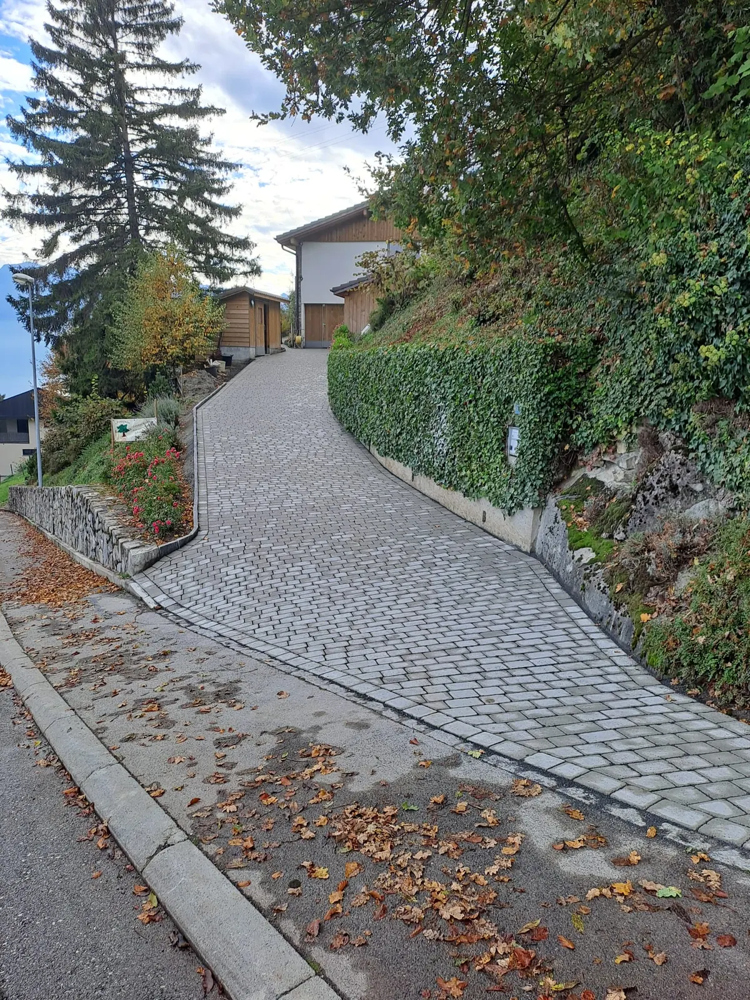
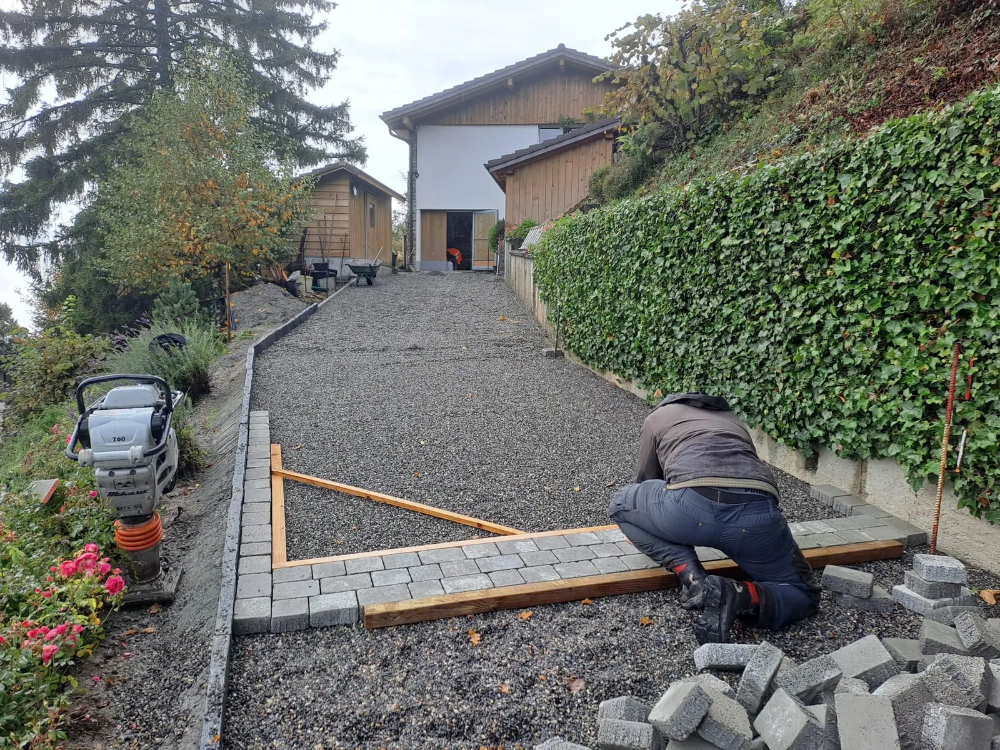
Une rampe d'accès refaite en pavés, le long de la haie.
Processus
Un échange par téléphone ou par e-mail pour cerner votre demande, puis un premier rendez-vous sur le lieu du projet.
Sur place, nous analysons le terrain, vos envies et votre budget.
Une offre personnalisée, envoyée par e-mail ou présentée lors d'un second rendez-vous.
Les travaux sont planifiés et réalisés dans les meilleurs délais, la facturation intervient dans le mois qui suit.
Contact
Tout commence par un appel ou un e-mail. Nous intervenons sur la Riviera vaudoise.
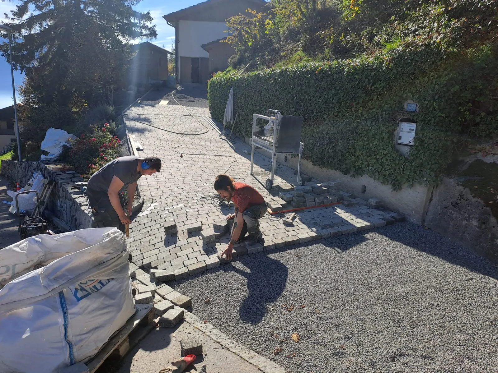